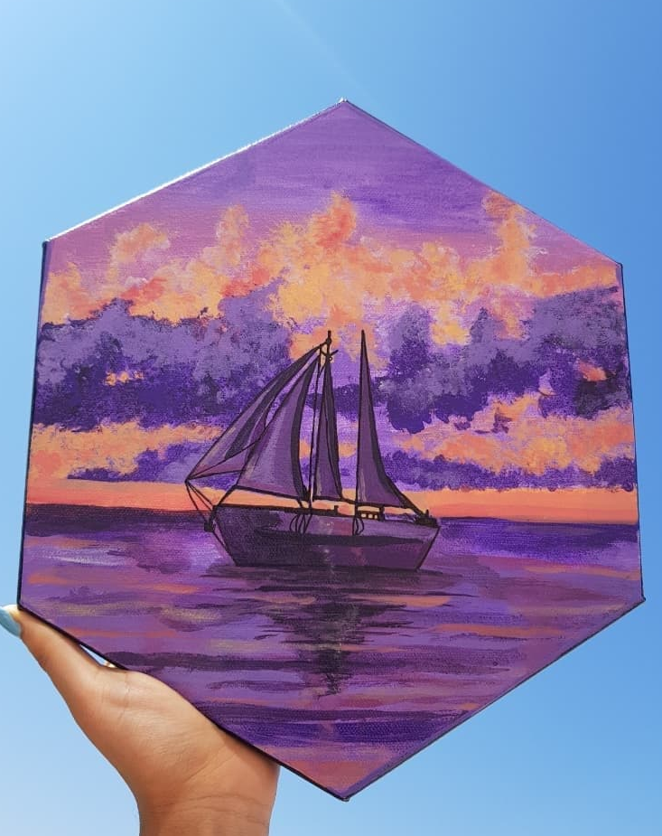
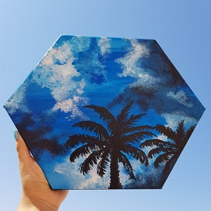
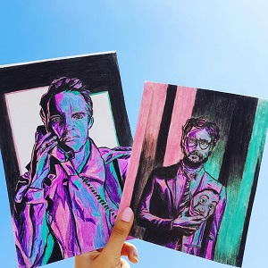

While I have been passionate about chess and art since my childhood days, I developed a keen interest in quizzing and MUN while at high school. I was especially drawn towards MUN since it sensitized me to a plethora of global issues including climate change, abuse of human rights and gender discrimination. In addition to providing me with a platform to discuss such important issues, MUN also gave me the opportunity to hone my debating skills.
Part of the team that represented VNIT in the Inter-NIT Chess Tournament held in Jaipur, India (2019)
Represented ISG in a match against the Indian Grandmaster and 5-time world chess champion - Viswanathan Anand (2016)
Part of the team that represented ISG at the National-level chess competition (2010-2013)
Awarded the position of Best Delegate at the Inter-College MUN contest (2019). Represented UK for the agenda 'Mass Human Rights Violations during Anti-Government Protests around the World'.
Represented ISG at the Second Session of WFUNA International MUN, New York (2015)
Chair of the Economic and Financial Affairs Council (ECOFIN) at the ISG MUNC (2017)
First Runner-Up in Byju’s National Level “Think and Learn Challenge” held in Dubai (2017)
Represented school at an international art contest with the theme "Global Issues", held at Singapore International School, Mumbai (2014)